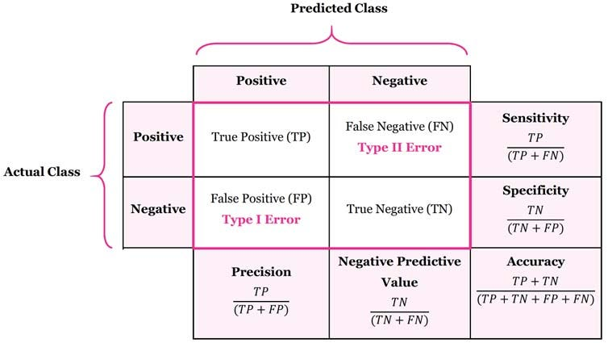

df_linear <- arrow::read_parquet("data/df_linear.parquet")
df_interaction <- arrow::read_parquet("data/df_interaction.parquet")3. Estimar un modelo
Agenda
Parte I
- Especificar un modelo
- Estimar un modelo
- Ver los resultados del modelo
Parte II
- Dividir los datos
- Especificar un modelo
- Estimar un modelo
- Evaluar el modelo
- Estimar un modelo mejor
Estimar un modelo
Hay muchas formas de estimar modelos en R
lm(formula, data, ...)stan_glm(formula, data, family= "gaussian",...)glmnet(x=matrix, y=vector, family="gaussian",...)
Tip
lm(): Ajusta un modelo de regresión lineal a los datos.
stan_glm(): Ajusta un modelo de regresión utilizando el paquete Stan.
glmnet(): Ajusta un modelo de regresión utilizando la regularización Lasso o Ridge.
Especificar el modelo en tidymodels
Tidymodels ofrece una sintaxis general para estimar los modelos
https://www.tidymodels.org/
- Especificar el tipo de modelo
- linear_reg(), logistic_reg(), decition_tree()
- Especificar el tipo de outcome
- Regresión para outcomes continuos
- Clasificación: multinomial, ordinal, binaria
library(tidymodels)── Attaching packages ────────────────────────────────────── tidymodels 1.4.1 ──✔ broom 1.0.10 ✔ recipes 1.3.1
✔ dials 1.4.2 ✔ rsample 1.3.1
✔ dplyr 1.1.4 ✔ tailor 0.1.0
✔ ggplot2 4.0.0 ✔ tidyr 1.3.1
✔ infer 1.0.9 ✔ tune 2.0.0
✔ modeldata 1.5.1 ✔ workflows 1.3.0
✔ parsnip 1.3.3.9000 ✔ workflowsets 1.1.1
✔ purrr 1.2.0 ✔ yardstick 1.3.2 ── Conflicts ───────────────────────────────────────── tidymodels_conflicts() ──
✖ purrr::discard() masks scales::discard()
✖ dplyr::filter() masks stats::filter()
✖ dplyr::lag() masks stats::lag()
✖ recipes::step() masks stats::step()tidymodels_prefer()
linear_reg() |>
set_engine("lm") Linear Regression Model Specification (regression)
Computational engine: lm linear_reg() |>
set_engine("glmnet") Linear Regression Model Specification (regression)
Computational engine: glmnet linear_reg() |>
set_engine("stan") Linear Regression Model Specification (regression)
Computational engine: stan Especificar el modelo en tidymodels
Tip
library(): Carga el paquete tidymodels en R.
tidymodels_prefer(): Establece el paquete tidymodels como el preferido para las funciones de modelado en R.
linear_reg(): Crea una especificación de modelo de regresión lineal en el marco de trabajo tidymodels.
set_engine(): Establece el motor de cálculo para un objeto de especificación de modelo. Se establece en “lm” para la primera llamada a linear_reg(), “glmnet” para la segunda llamada y “stan” para la tercera.
Estimar un modelo
Estimar un modelo de regresión logistica para evaluar la asociación entre el consumo de alcohol y los factores de riesgo
library(gtsummary)
df_linear |>
tbl_summary()| Characteristic | N = 5001 |
|---|---|
| Y | 0.07 (-0.69, 0.69) |
| X1 | -0.02 (-0.69, 0.64) |
| X2 | 0.01 (-0.65, 0.63) |
| X3 | 0.00 (-0.81, 0.72) |
| X4 | -0.05 (-0.72, 0.58) |
| X5 | -0.01 (-0.77, 0.67) |
| 1 Median (Q1, Q3) | |
Explorar los datos visualmente
library(corrr)
df_linear |>
correlate() |>
fashion()Correlation computed with
• Method: 'pearson'
• Missing treated using: 'pairwise.complete.obs' term Y X1 X2 X3 X4 X5
1 Y .20 -.14 .30 -.09 .15
2 X1 .20 .05 -.05 -.04 -.05
3 X2 -.14 .05 .08 -.00 .04
4 X3 .30 -.05 .08 -.01 .06
5 X4 -.09 -.04 -.00 -.01 -.01
6 X5 .15 -.05 .04 .06 -.01 1. Especificar el modelo
lm_model <-
linear_reg() %>%
set_engine("lm") |>
set_mode("regression")Especificar un modelo de regresión lineal. Se establece el “paquete”, en este caso “lm” y opciones del paquete (la distribución de la variable de respuesta). Además, se establece el modo de modelado en “regression” para indicar que es una variable continua. El resultado se almacena en el objeto lm_model.
2. Estimar el modelo
lm_results <- lm_model |>
fit(Y ~ ., data = df_linear)Aquí se ajusta-estima el modelo utilizando la función fit(). Se especifica la variable de respuesta (Y) y los predictores (.) y se utiliza el objeto df_linear como base de datos.
3. Ver los resultados del modelo
lm_results |> tidy() # A tibble: 6 × 5
term estimate std.error statistic p.value
<chr> <dbl> <dbl> <dbl> <dbl>
1 (Intercept) 0.0537 0.0440 1.22 2.23e- 1
2 X1 0.247 0.0446 5.54 4.92e- 8
3 X2 -0.192 0.0442 -4.34 1.73e- 5
4 X3 0.324 0.0418 7.74 5.47e-14
5 X4 -0.0868 0.0440 -1.97 4.91e- 2
6 X5 0.155 0.0437 3.54 4.38e- 4lm_results |> glance()# A tibble: 1 × 12
r.squared adj.r.squared sigma statistic p.value df logLik AIC BIC
<dbl> <dbl> <dbl> <dbl> <dbl> <dbl> <dbl> <dbl> <dbl>
1 0.191 0.183 0.981 23.3 4.71e-21 5 -697. 1408. 1437.
# ℹ 3 more variables: deviance <dbl>, df.residual <int>, nobs <int>tidy(): Esta función se utiliza para convertir los resultados de un modelo en un marco de datos “ordenado” que muestra los coeficientes del modelo, los errores estándar, los valores t y los valores p para cada variable independiente.
glance(): Esta función se utiliza para resumir los resultados de un modelo como estadísticas globales del modelo, por ejemplo, R-cuadrado ajustado, el AIC y el BIC.
Reto de código # 2
- Estimen este modelo utilizando la base de datos
df_interaction. - Compare los valores de los coeficientes entre ambos modelos.
Para qué necesitamos los datos?
Necesitamos:
- Estimar parámetros del modelo
- Seleccionar modelos
- Sintonizar los modelos (tunning)
- Evaluar los modelos¿Cómo gastarnos los datos de una forma que sea eficiente para todos estos pasos? (validación empírica)
Primera idea: dividir los datos en dos.
Dividir los datos
- Dividir los datos en dos conjuntos
- Entrenamiento
- La mayoría de los datos (70% o 80%)
- Aquí se ajusta el modelo
- Prueba
- Un pequeño conjunto de datos
- Aquí se evaluará el modelo final
- Entrenamiento
Los datos de prueba se utilizan una sola vez, si se utilizan más de una vez, se convierten en parte del proceso de entrenamiento.
La división de los datos se hace al nivel de unidad independiente de observación.
Contaminación del los datos de prueba (information leakage)
Dividir los datos
Crear dos bases: 80% y 20%
set.seed(01122025)
datos_divididos <- initial_split(df_linear, prop = 0.8, strata = "Y")
datos_entrenamiento <- training(datos_divididos)
datos_prueba <- testing(datos_divididos)- La opción strata es para que los datos de entrenamiento y prueba tengan la misma distribución de la variable Y
A veces la selección aleatoria de la muestra es problemática, por ejemplo cuando hay una componente de tiempo en los datos. En este caso, se puede usar la función initial_time_split().
Dividir los datos
set.seed(): se utiliza para establecer una semilla para la generación de números aleatorios en R. En este caso, se utiliza para establecer la semilla en 01122025, lo que garantiza que los resultados sean reproducibles. Esto es especialmente importante cuando se trabaja con modelos de aprendizaje automático, ya que los resultados pueden variar según la semilla utilizada para la generación de números aleatorios.
Dividir los datos
datos_entrenamiento |>
tbl_summary()| Characteristic | N = 4001 |
|---|---|
| Y | 0.07 (-0.69, 0.68) |
| X1 | -0.02 (-0.74, 0.69) |
| X2 | 0.00 (-0.65, 0.62) |
| X3 | -0.01 (-0.87, 0.67) |
| X4 | -0.07 (-0.72, 0.55) |
| X5 | 0.01 (-0.77, 0.70) |
| 1 Median (Q1, Q3) | |
1. Especificar el modelo
lm_model <-
linear_reg() %>%
set_engine("lm") |>
set_mode("regression")2. Estimar el modelo
lm_results <- lm_model |>
fit(Y ~ ., data = datos_entrenamiento)3. Ver los resultados del modelo
lm_results |> tidy()# A tibble: 6 × 5
term estimate std.error statistic p.value
<chr> <dbl> <dbl> <dbl> <dbl>
1 (Intercept) 0.0579 0.0484 1.20 2.33e- 1
2 X1 0.217 0.0482 4.50 9.15e- 6
3 X2 -0.209 0.0490 -4.27 2.49e- 5
4 X3 0.300 0.0459 6.55 1.85e-10
5 X4 -0.0808 0.0481 -1.68 9.42e- 2
6 X5 0.192 0.0480 4.00 7.71e- 5lm_results |> glance()# A tibble: 1 × 12
r.squared adj.r.squared sigma statistic p.value df logLik AIC BIC
<dbl> <dbl> <dbl> <dbl> <dbl> <dbl> <dbl> <dbl> <dbl>
1 0.189 0.179 0.966 18.4 2.13e-16 5 -551. 1115. 1143.
# ℹ 3 more variables: deviance <dbl>, df.residual <int>, nobs <int>4. Evaluar el modelo
predecir_estos_valores <- datos_entrenamiento %>%
select(-Y) %>%
slice_sample(n = 10)
predict(lm_results, predecir_estos_valores)# A tibble: 10 × 1
.pred
<dbl>
1 -0.285
2 -0.711
3 -0.646
4 0.535
5 0.468
6 -0.445
7 -0.351
8 0.0713
9 -0.0207
10 0.438 entrenamiento <- datos_entrenamiento %>%
select(-Y)
prediccion <- predict(lm_results, entrenamiento)
resultados_prueba <- cbind(prediccion, datos_entrenamiento) Métricas
Para modelos de regresión en tidymodels se puede optimizar con:
rmse(): raíz del error cuadrático medio, estándar cuando queremos minimizar desviaciones.rsq(): coeficiente de determinación, útil cuando buscamos maximizar varianza explicada.mae(): error absoluto medio, menos sensible a valores extremos.mape()ysmape(): porcentajes absolutos, prácticos cuando la escala importa.ccc()(concordance correlation coefficient) yhuber_loss()para contextos robustos.- Con
metric_set(rmse, rsq, mae, mape)puedes evaluar varias métricas y elegir cuál usar enselect_best().
Métricas
Precision (Precisión): Es la proporción de verdaderos positivos (TP) que son identificados correctamente por el modelo en relación con el total de verdaderos positivos y falsos positivos (FP). La precisión mide la capacidad del modelo para no identificar falsamente un caso como positivo.
Recall (Recuperación): Es la proporción de verdaderos positivos (TP) que son identificados correctamente por el modelo en relación con el total de verdaderos positivos y falsos negativos (FN). El recall mide la capacidad del modelo para identificar todos los casos positivos.
F-measure (Puntuación F): Es una métrica que combina la precisión y el recall en una sola puntuación. El valor de la F-measure oscila entre 0 y 1, siendo 1 el valor óptimo.
Métricas
Kappa (Coeficiente Kappa): Es una medida de concordancia que compara la cantidad de acuerdos observados entre el modelo y las observaciones reales con la cantidad de acuerdos que se esperarían por casualidad. Un valor de kappa cercano a 1 indica una concordancia casi perfecta entre el modelo y las observaciones reales.
Matthews Correlation Coefficient (Coeficiente de Correlación de Matthews): Es una medida que se utiliza para evaluar la calidad de la clasificación binaria. El coeficiente de correlación de Matthews oscila entre -1 y 1, siendo 1 el valor óptimo. Un valor cercano a 1 indica una clasificación perfecta, mientras que un valor cercano a -1 indica una clasificación completamente incorrecta.

Calcular las métricas
rmse(resultados_prueba, truth = Y,
estimate = .pred)# A tibble: 1 × 3
.metric .estimator .estimate
<chr> <chr> <dbl>
1 rmse standard 0.959rsq(resultados_prueba, truth = Y,
estimate = .pred)# A tibble: 1 × 3
.metric .estimator .estimate
<chr> <chr> <dbl>
1 rsq standard 0.189mae(resultados_prueba, truth = Y,
estimate = .pred)# A tibble: 1 × 3
.metric .estimator .estimate
<chr> <chr> <dbl>
1 mae standard 0.761Calcular las métricas
custom_metrics <- metric_set(rmse, rsq, mae)
custom_metrics(resultados_prueba,
truth = Y,
estimate = .pred
)# A tibble: 3 × 3
.metric .estimator .estimate
<chr> <chr> <dbl>
1 rmse standard 0.959
2 rsq standard 0.189
3 mae standard 0.761lm_metrics <- custom_metrics(resultados_prueba,
truth = Y,
estimate = .pred
) |>
mutate(model = "lm")Tabla de Métricas
library(gt)
custom_metrics(resultados_prueba,
truth = Y,
estimate = .pred
) |> gt()| .metric | .estimator | .estimate |
|---|---|---|
| rmse | standard | 0.9585853 |
| rsq | standard | 0.1889990 |
| mae | standard | 0.7605981 |
Reto de código # 3
- Estimen este modelo utilizando la base de datos
df_interaction. - Estimen este modelo utilizando la base de datos
df_random. - Compare los valores de las métricas entre ambos modelos.